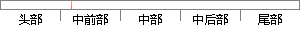

不同的特征参数对声纹识别系统的影响不同，决定着系统的性能。
片段位置图

相似结果|
相似片段 1：在不同维数的情况下，其对声纹识别系统性能的影响。表3．1不同特征参数不同维数对声纹识别系统性能的影响Table．3．1一Differentdimensionsan—d—ch—a
相似片段 2：，对LPC、MFCC及其差分参数的不同组合进行实验比较，研究这些特征参数对改善识别系统性能的影响，为保证系统识别性能，选择Mel倒谱与一阶差分Mel倒谱作为特征参数，这种参数组合形式同时考虑了语音帧内和
相似片段 3：识别系统的性能。423.4.4不同特征维度下三种方案识别性能分析为了研究在采用不同的特征维度时，三种声纹识别方案的识别效果所表现的差异，找到最佳的特征维度。根据实验 3.4.3表明，相比其它特征参数
相似片段 4：的错误率可能会不同，但是基本的评价性能是一样的。§3.5 小结声纹识别系统主要由预处理、特征参数提取以及模式匹配三大功能模块组成。本章首先介绍了声纹识别技术中语音信号的预处理技术；特征参数提取部分介绍
相似片段 5：首先，对在不同语音信号时长条件下，针对不同组合的声纹识别系统进行仿真，研究各组系统的识别性能；然后，在相同语音时长条件下对说话人语料样本加入高斯白噪声做干扰，研究不同信噪比情况下各组合声纹识别系统
|
※ 片段修改建议 ※
近似词参考：- 不同：分歧 差别
- 不同：分歧 差别
- 决定：决议 决意 抉择
- 系统：体系
- 性能：机能
系统自动生成语句：分歧的特征参数对声纹识别体系的影响分歧，决议着体系的机能。
注：本片段修改建议为系统自动生成，仅供参考。